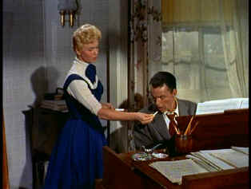

| Young at Heart/C+,F+ |
| Artisan/1954 |
There isn't enough energy to to stimulate an amoeba at the outset of Young at Heart. The comedy kicks in when Gig Young arrives on scene as annoyingly arrogant but winsome composer Alex Burke. Burke quickly wins over the four ladies of the Tuttle household. When Alex arranges to live with the Tuttles while he works at the local Music Institute and composes his latest Broadway offering, romance fills the air. Arranger Barney Sloan adds some mustard to the plain white bread when he arrives to work with Alex.
 |
|
Crooning with a smoke. ©Artisan |
There are some charming moments, but Young at Heart
is a mixed bag of forced small town sunshine and melancholy dreariness. The script fails to paint a convincing picture of small town life or
failed dreams or the complex issues of family relationships. The major
relationship doesn't even make sense as portrayed. There's no cohesion to
the musical numbers. There's a mixed spirit about the film. It wants to be
bright but its overcome with its own melancholy.
It's no secret: Doris Day (Laurie) can put over a song. She
has a couple of cute numbers on the beach, but Young at Heart turns out
more sappy melodrama than upbeat musical. Gordon Douglas' direction is
uninspired. Cuts are by the book with annoying reaction shots that serve
to sap whatever energy the scenes may have. It's almost thirty-five
minutes before Sinatra makes his entrance, far too long. When Barney
(Sinatra) meets Laurie, you expects sparks to fly,
but the scene actually drags. Sinatra croons a few moody standards,
but even the singing talents of Day and Sinatra aren't enough to make Young
at Heart solid entertainment.
The original elements for this transfer of Young at Heart
are in miserable condition. The color is faded and the source material is
rife with dirt and scratches. Sections of the transfer are distorted from uneven element
shrinkage. Image is frequently so as well. Heavy grain is
uneven. It looks like this DVD may have been taken from some inferior
composite master source. There's a scratchiness in the soundtrack. At least the title song sung by Sinatra over the
opening and closing credits sounds quite nice. Is the best we can get for
starring Frank Sinatra and Doris Day? Sad to say this may be the best for
through the tenure of DVD. A DVD presented in such poor condition should
have a bold consumer warning on the label indicating the poor element
condition.
Reviewed on a Sharp 9000VX DLP Projector

Selections from the Feature Archive include articles on Akira Kurosawa, Frank Darabont, Blonde Bimbos, Hollywood Street Gangs, or Vietnam: The Hollywood Pariah, and many
more....
Puttin on the Ritz

Fred Astaire and Cyd Charisse bring Silk Stockings to life, a
remake of Ninotchka, one of many films successfully turned into musicals
by the Hollywood dream factory. Read all about remakes into musicals by
clicking on

Take a look at the merry images of America's gift to the movies: Hollywood Musical Posters are featured from The Movie Poster Archive.

 Have you visited
Home Theater
Talk lately? One of the friendliest places on the Net for Home
Theater and DVD discussion, you can get help for installation problems or
simply share your opinions with other Vidiots.
Have you visited
Home Theater
Talk lately? One of the friendliest places on the Net for Home
Theater and DVD discussion, you can get help for installation problems or
simply share your opinions with other Vidiots.

Images is a non-commercial Web site created for everyone who enjoys movies
and popular culture. Images is published quarterly; however, new reviews
will appear each week, so check back often.

The National Film Preservation Foundation (NFPF) is the
nonprofit organization created by the U.S. Congress to save America's film
heritage.

Annie Get Your Gun/A,A-
Irving Berlin's brilliant musical gem is polished and preserved on this
Warner DVD release. An explosion of music, song, dance and color.